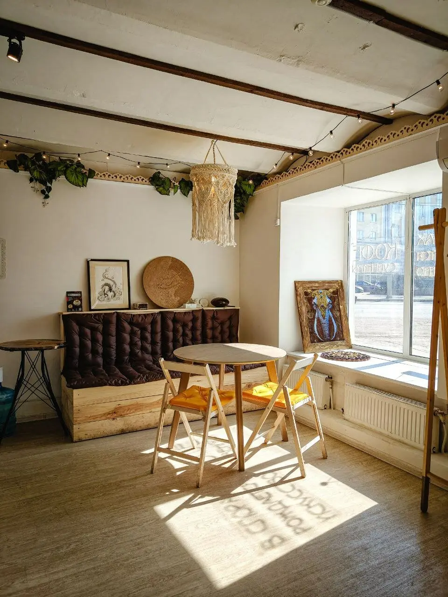
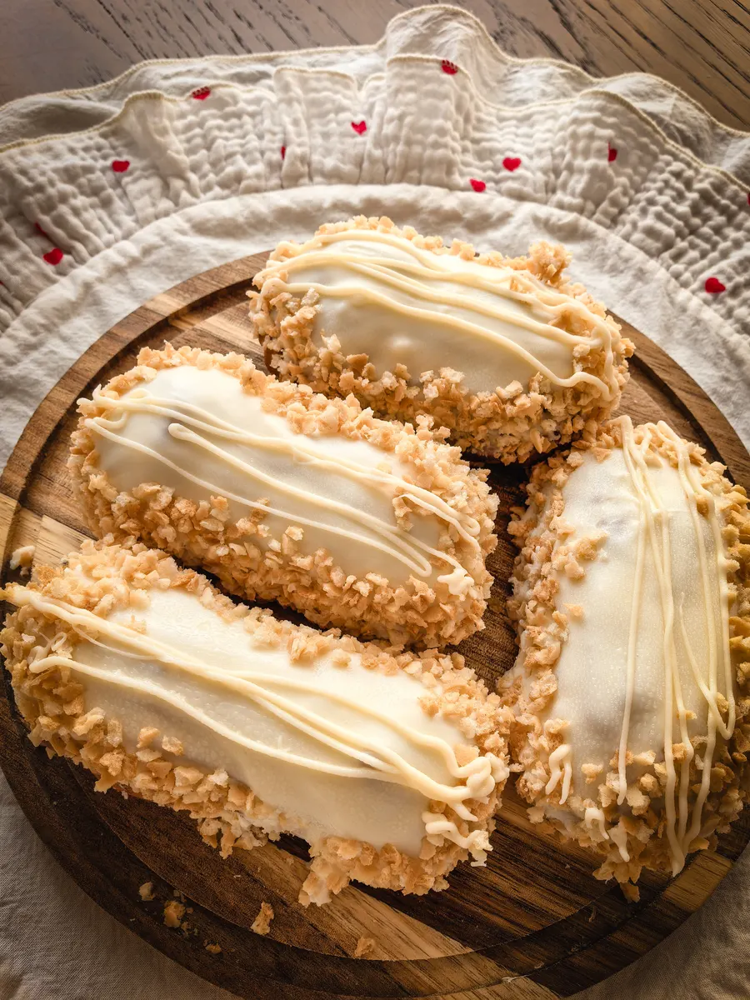
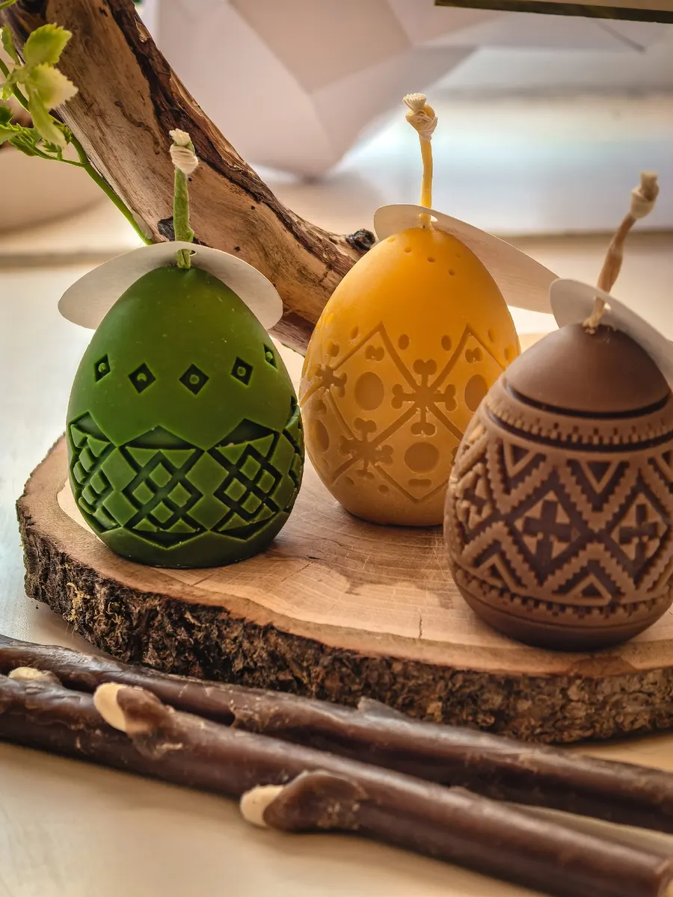
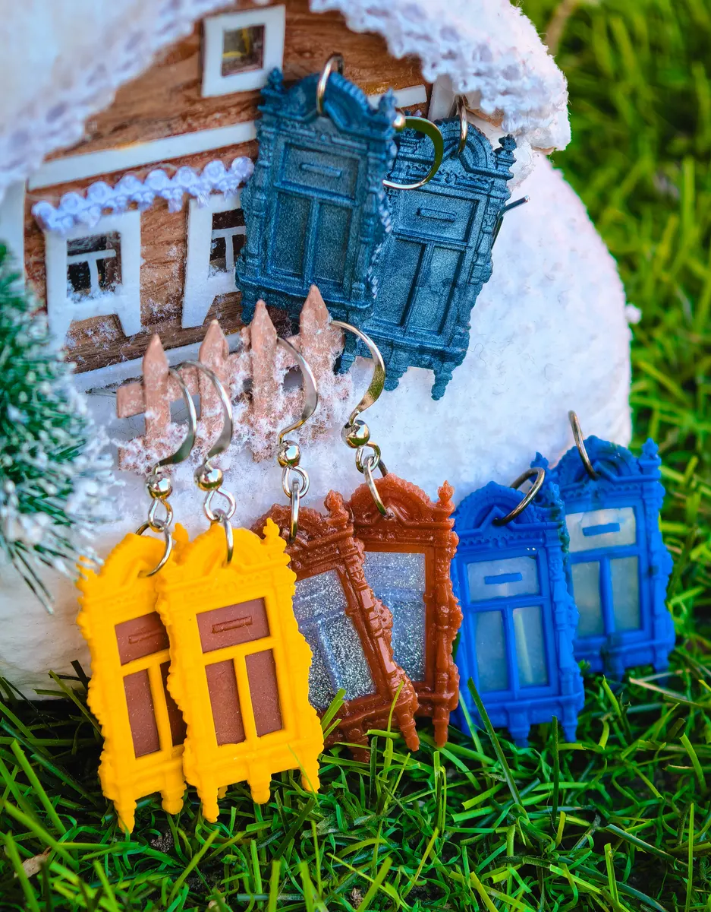

Арт-пространство · Рязань, Соборная, 52
Арт-пространство «Споры» в Рязани: кофе, десерты и работы мастеров
Кофе от местных обжарщиков, рязанский калинник и полки с изделиями ручной работы в центре города.
- Работы рязанских мастеров: открытки, свечи, украшения, текстиль
- Мастер-классы, лекции и концерты
- Ежедневно с 10:00 до 20:00

Что у нас есть
Входит
- Кофе и чай, десерты и рязанский калинник
- Полки с работами местных мастеров: свечи, украшения, текстиль, открытки
- Сувениры с Рязанью и грибной стафф
- Упаковка подарков и зарядка для телефона
Отдельно, если нужно
- Мастер-классы и лекции
- Концерты и творческие вечера
- Можно с собакой до 35 см
Кофе и сладкое
Цены с карточки на Яндекс.Картах, меню обновлено 29 сентября. Остальные позиции уточняйте в пространстве.
Кофе и десерты
- Капучинокофе от местных обжарщиковот 130 ₽
- Эклер с грибамидесерт200 ₽
- Чизкейкнатуральный, из фермерских продуктов250 ₽
Рязанское на вынос
- Калинникпять вкусовуточнить
- Грибные сладостишоколад, мармелад, вареньеуточнить
Кофе, чай и еда навынос, оплата картой. Цены на изделия мастеров зависят от автора, их называют на месте.
Как заказать с собой
- 01
Выберите напиток и десерт
В калькуляторе выше: цены те же, что в пространстве.
- 02
Отправьте заказ
Кнопка откроет готовое сообщение в WhatsApp.
- 03
Заберите на Соборной, 52
Ответим, когда будет готово.



Почему к нам заходят
Галерея рязанских талантов
В отзывах гости пишут про работы более чем 40 местных мастеров.
Калинник пяти вкусов
Свежие, в холодильнике у кассы – так описывают гости в отзывах.
Расскажут о мастерах и городе
Продавцы советуют, что выбрать, и рассказывают, куда ещё сходить в Рязани.
Не только кофейня
Мастер-классы, лекции и концерты проходят в самом пространстве.
Отзывы с Яндекс.Карт
«Великолепное ламповое место. Можно выпить кофе от местных обжарщиков с вкусными калинниками ( 5 вкусов, это вам не магазинное повидло внутри, плюсом черемуховая мука в составе дает приятную хрусткость и интересный черемуховый привкус ).»
анна ш. · 27 апреля
«Собрать в одном месте изделия крафт-мастеров Рязани - это дикий восторг при каждом посещениии данного пространства»
Светлана Преображенская · 7 сентября
«Само пространство невероятно уютное и эстетичное: продуманный дизайн, мягкий свет, приятная атмосфера — хочется рассматривать каждую деталь интерьера.»
Анастасия П. · 2 мая
Отзывы с карточки на Яндекс.Картах, без правок.
Частые вопросы
Что можно купить?
Изделия рязанских мастеров: свечи, открытки, украшения, шопперы, магниты, сувениры с Рязанью, а ещё калинник и грибные сладости.
Бывают ли мероприятия?
Да. В отзывах гости пишут про мастер-классы, лекции, поэтические вечера и концерты. Анонсы уточняйте у нас в Telegram.
Можно с собакой?
По карточке на Картах разрешено с собаками до 35 см.
Можно ли взять кофе с собой?
Да, кофе и еда навынос. Заказ можно собрать в калькуляторе и отправить в WhatsApp.
Загляните на Соборную, 52
- Адрес
- Соборная ул., 52, Рязань
- Часы
- ежедневно 10:00–20:00
- Телефон
- +7 (920) 962-01-03